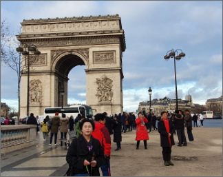

|  | 프랑스 | 에투알 개선문은 높이 51미터, 너비 45미터로 웅장한 규모를 자랑한다. 로마의 티투스 개선문에서 영감을 받은 이 개선문은 프랑스 황제 나폴레옹 1세가 1806년 아우스터리츠 전투를 승리한 뒤 프랑스 군대의 모든 승리를 기념하기 위해 만들게 한 것으로, 이후 전 세계에 국가나 승전 기념비 열풍을 불러일으켰다. | |
|---|---|---|---|
| 유럽여행 | 파리 | 여행추천 | 장-피에르 코르토의 <나폴레옹의 승리, 1810>은 월계관을 쓰고 토가를 입은 황제 나폴레옹이 트럼펫이 울려 퍼지는 가운데 한 도시의 항복을 받아들이는 장면을 묘사하고 있다. 또 앙투안 에텍스의 부조도 두 점 볼 수 있다. 말을 탄 인물과 자신의 가족을 지키려 하는 벌거벗은 병사, 그리고 그를 보호하고 있는 미래의 영혼을 묘사한 <저항>, 로마 신화의 지혜의 여신인 미네르바의 보호를 받는 전사가 농부들에게 둘러싸여 칼을 칼집에 꽂는 장면을 표현한 <평화>가 그것이다. 프랑수아 루드의 <1892년 자원병들의 출정>은 전쟁의 여신 벨로나가 이끄는 알몸의 애국자들이 프랑스의 적들을 향해 나아가는 모습을 묘사하였다. |
| 여행시간 | 3시간 | 여행일자 | 2022. 12. 16 |